Projects
Registration Webapp - Java Sprint Boot
With an interest in Java, I began working on a webapp to display my skills. I created a Registration Form with the ability to ingest into a MySQL database and validate the data with server and client side solutions.
The webapp included two pages; Registration Form and Users.
Registration Form allows the user to input their details. The client side validation issues the user a warning when they have left fields empty or used improper email format.
When validated correctly, the webapp attempts to ingest the data into the database. If the database rejects a piece of data, such as "email address already exists", it will then inform the user to correct. Otherwise, inputs the fields into the database.
Users page simply displays all the inputted data in a table format.
See images below
.png)
.png)
.png)
.png)
.png)
.png)
Ventur - Unity 3d game
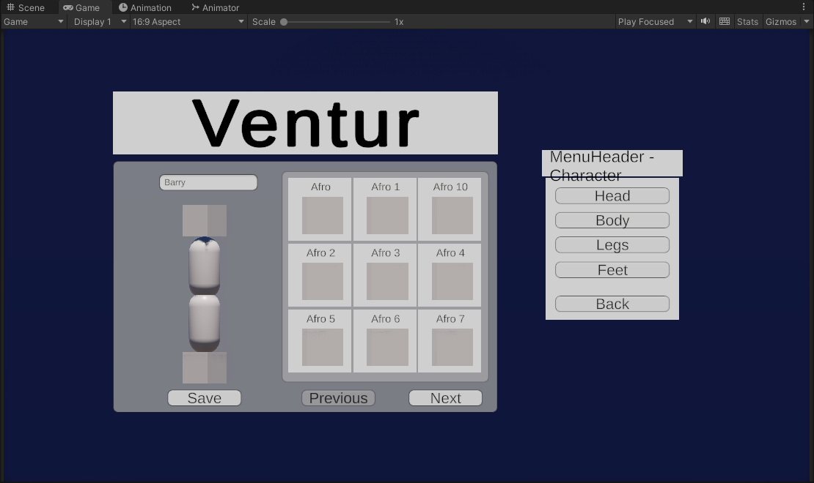(Click image for video) I have always had a keen interest in gaming and game development. Over the last few years, I have been working on creating my own game using Unity with C# Scripts or Unreal Engine. I have made a lot of progress with the added bonus of becoming familiar with new languages and techniques through self-taught learning. I have found myself to be better with the code rather than model creation. My interest has pushed me to research and learn on multiplayer mechanics to build my game.
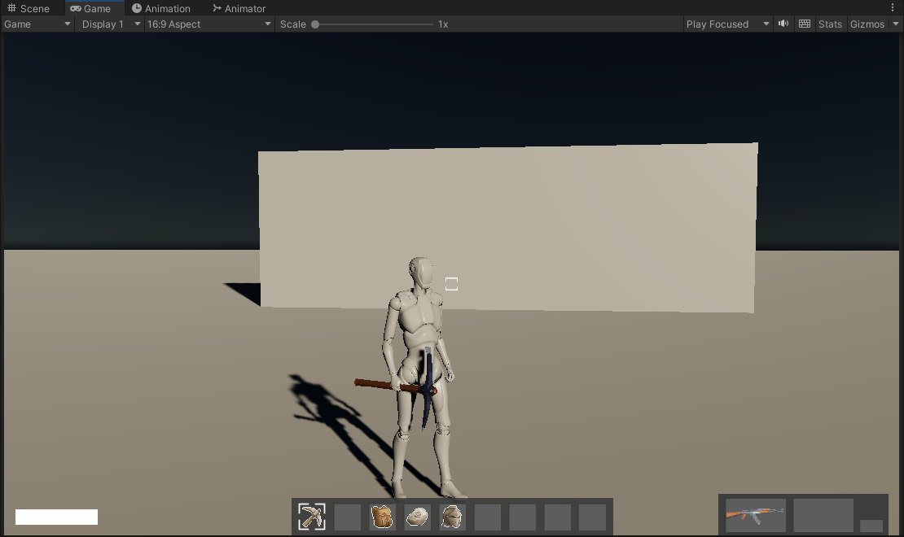Ventur is a game which is based on multiple games together (Bordlerands, Animal Crossing, Rogue-like, etc). A game in which a group of friends can get together and that doesn't need much interest (compared to other AAA games). The game will take parts from the other well-made games, with features such as third person shooting, building, killing enemies and bosses, but with a more laid back side, like farming, maintaining your home, repairing tools etc.
This game is early stages, however, I am continuing to work on and progress during my free time. Models creation is my downfall, as I have tried and tested but found that I would need to practice and experience, and will most likely outsource the models.
San Fran Traffic Data - University Big Data Project
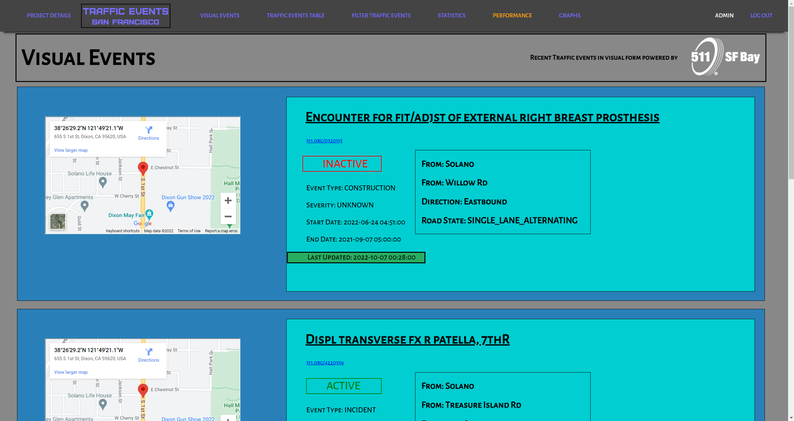"As the planet continues to grow, more humans will roam it. This brings a quantity of data that is unable to handled. Data continues to get bigger, therefore we need databases that can ingest such copious amounts and be able to pump out the formatted data needed to process in the frond-end without the stress or processing usage". The project aim was to build a database that can ingest a vast quantity of incoming data and process it into views for the front-end website which allows the website to have less load from processing all the unneeded information making it more efficient and quicker.
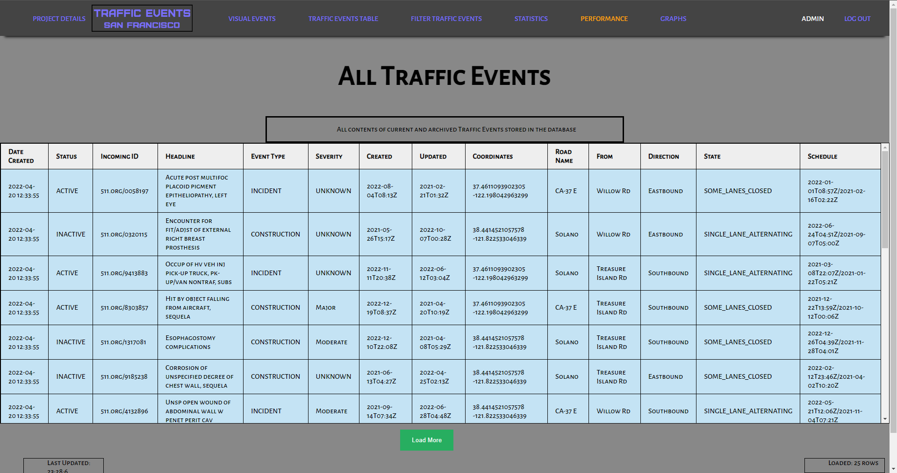With that in mind, the project was able to ingest substantial amounts of data (1010 rows per 30 seconds - as I was limited by the Universities hardware but the programs and database could have handled a lot more data) into the database, it automatically processed the raw data into formatted data that is usable in the front-end, it created views using functions which saved processing power of the website. Finally, the website was able to be tested by multiple users, not users of San Francisco due to the data being script-generated and not factual data, to increase the “big data” name. This project has shown that even though there are such enormous amounts of data in the world, it can still be processed to be released in real-time. However, Big Data is relatively new to the world, which means there are a lack in the skills able to create such powerful databases that industry need to take into consideration.
Jump - University Unity 3D Game
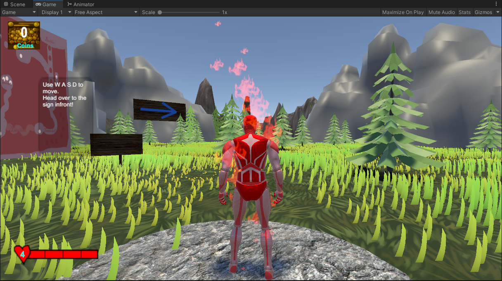(Click image for trailer)My game is based on the feature of a runner. The player must run, jump, and avoid obstacles in their path. As the character is a man on fire, he/she must avoid falling into the water (or being hit by a rock) as water will put him out, rocks will crush him and will lose a life. There are 4 chests on each map, these chests contain coins that the user has to collect to be able to proceed to the next map. These chests can be located throughout the map, maybe with hidden extras, after each obstacle. The HUD allows them to see their health and total number of coins.
Duck Hunt - University Unity VR Game
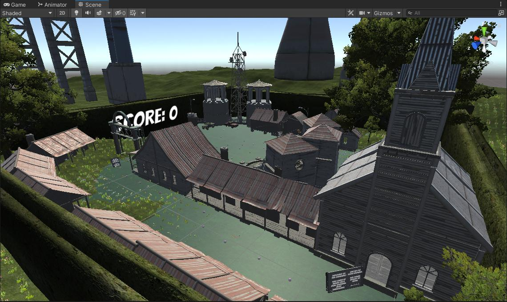This was my second assignment during University. I had to use my knowledge to create a VR game which was usable on VR and non-VR. If you look closely in the image, you can see small dots on the floor. This was my form of naivgation around the map. Why? Well I did this because of investigate research about VR causing nausia to newer players. To counter this, I created the teleport-like feature so stop the motion sickness. The game is about making your way round to the other side and to begin the shooting range (duck hunt), which there are 3 levels of difficulty (Easy/Medium/Hard) - each level controlling the speed and random movement of the ducks. Shooting the ducks gained you points which was displayed on the wall. This is also where I was introduced into LOD group for reduced load on hardware and performance.
Others - Smaller projects
University - 3D Game (First looks)
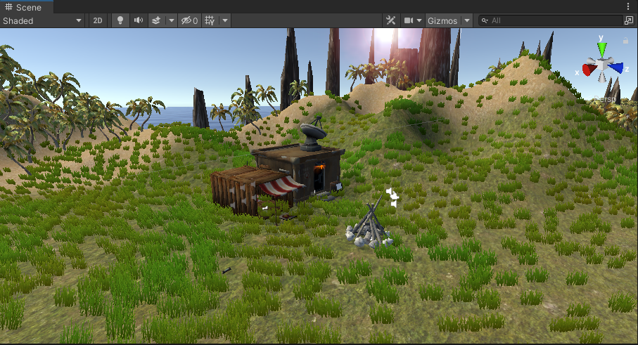This was my first test and use of Unity during University. I had to create a world using pre-made player controllers and objects. I was introduced into terrain making, detailing, grass texturing and particles. The player has to collect energy tokens (4) to open the door. 3 of which where placed around the map, 1 was placed in a shooting range which required extra coding to pick up a gun and shoot a target to unlock the case holding it. Once all 4 were collected, you could then open the house door and pick up the lighter and match to start the fire (which began the particles).
University - Android assignment
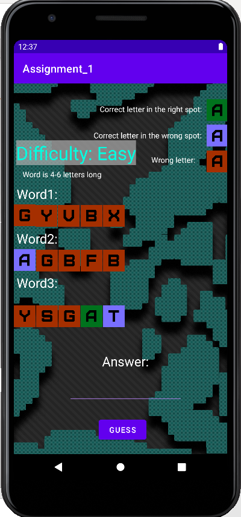My game is based on the word challenge that has gone viral (see image above). This is a guessing game where the person gets given 3 words. Each letter in the word has a state: correct letter and correct place, correct letter and wrong place, or incorrect letter. These are asigned by colors of the letters (green, yellow, grey). I’ve adapted this idea as it’s a great way to learn the spelling of words and to make it scienctific I based the words based on science.
University - iOS assigment
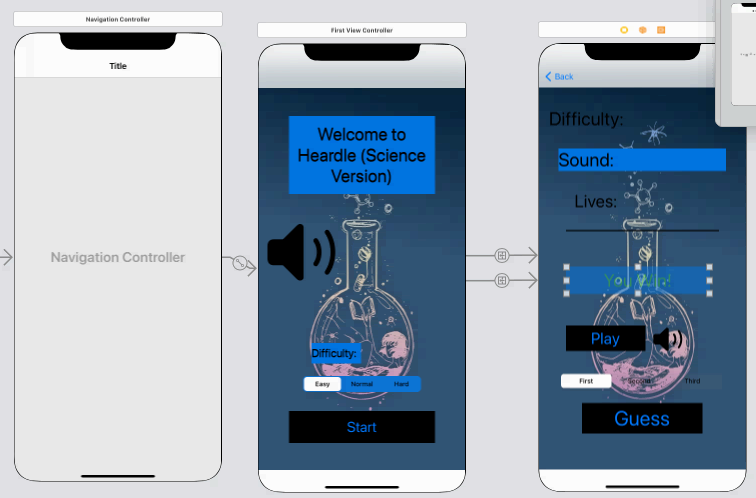I decided to recreate the online game “heardle”( https://www.heardle.app/) (which is wordle, but you listen to the noise). I implemented such noises referring to science for the users to guess. The user presses the button to listen to the noise and has 3 options to choose from. There is a lives system which if the user guessed incorrectly, a life will be deducted. When the user had 2 lives (starting amount) the amount of audio clip varied with the number of lives the user had, increased by 1/3 each time. When the user guessed correctly, it popped up on the screen, if the user failed and lost all their lives, they would be returned to the start menu.
World Menu Design
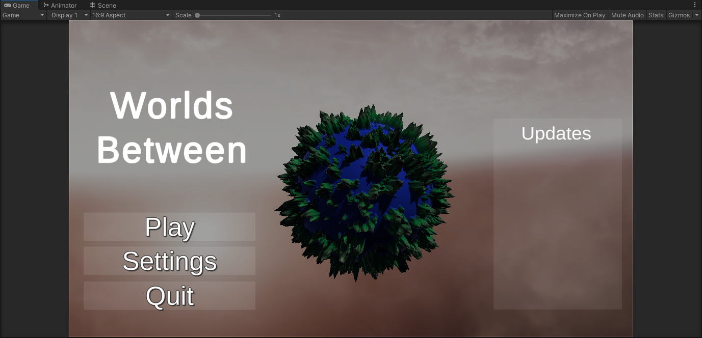(Click image for video)This creation taught me about planet generation that I turned into a starter menu. This project is delayed due to having my final year (University) project and can impletement it in my newest game.
First look at player usability
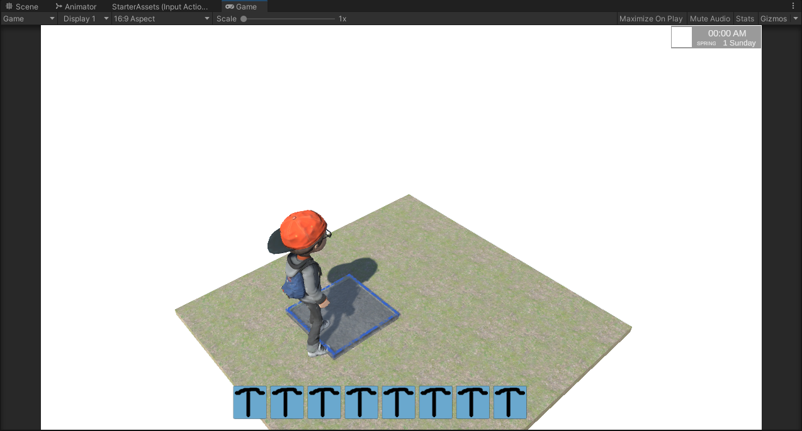(Click image for video)This creation taught me about player usability, time based events (similar to stardew valley) and inventory system. An improvement could be the addition of multiplayer, although a significant rewrite would be required.
Minecraft in Unity
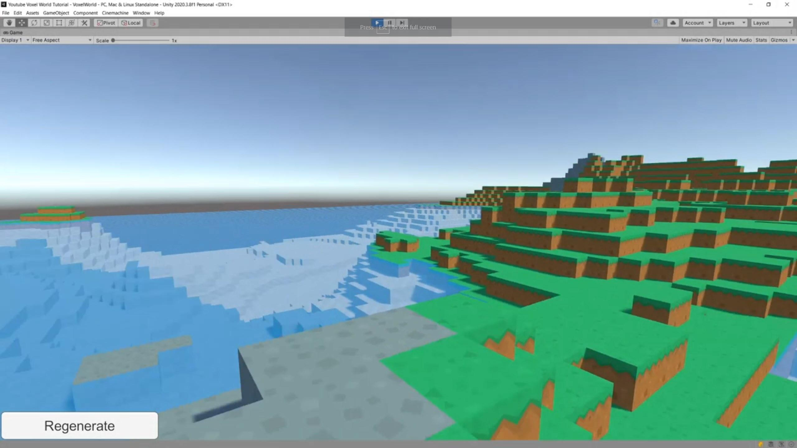(Click image for similar reference (from Sunny Valley Studio) I created a game (from Sunny Valley Studio tutorials) of Minecraft but in Unity. I wanted to see how Minecraft was made but in C#. From watching this tutorial, I learnt about Procedural Generation. This consisted of chunk generation using perlin noise (similar to the world generation), vertex based world, creating an infinate world but then also adding features such as multi-threading for better performance of generation.This was a long time ago, and I didn't save this version.